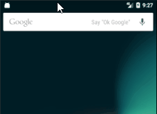

В прошлом уроке мы уже рассмотрели, как отобразить Activity по нажатию на уведомление. Но там был простой случай. В этом уроке рассмотрим более интересные случаи.
Чтобы понимать все, о чем дальше пойдет речь, вам понадобятся знания об Activity Tasks Stack. Почитать об этом можно в Уроке 116.
Для примера возьмем почтовое приложение, состоящее из трех экранов: список писем (MainActivity), содержимое письма (DetailsActivity) и информация о новой версии (WhatsNewActivity). При запуске приложения MainActivity отображает письма, а по нажатию на письмо открывается DetailsActivity c содержимым письма.
У приложения есть какой-то сервис, который связан с сервером. Когда на сервере появляется новое письмо, сервис скачивает его и показывает пользователю уведомление. Пользователь нажимает на него и открывается DetailsActivity для просмотра письма.
Аналогично, сервис получает информацию о новой версии приложения и создает уведомление для этого события. По нажатию на уведомление будет открываться WhatsNewActivity, в котором будут подробно расписаны новые фичи приложения.
Но открывать два этих Activity мы будем разными способами.
DetailsActivity мы будем открывать так же, как если бы оно было открыто из MainActivity. Т.е. мы откроем сразу два Activity (одно за другим): MainActivity и DetailsActivity. Нажав Назад в открывшемся DetailsActivity пользователь попадет в MainActivity.
С экраном WhatsNewActivity ситуация другая. Он предназначен только для открытия из уведомления. Из приложения его открыть невозможно. Т.е. в приложении просто нет такого списка или такой кнопки, которые открыли бы WhatsNewActivity. Потому что это не особо важная информация, и, если вы вдруг сами захотели посмотреть ее, вы можете сходить на сайт приложения.
Давайте рассмотрим, как реализуются два этих варианта
DetailsActivity, как часть приложения
Сначала настроим DetailsActivity в манифесте:
<activity
android:name=".DetailsActivity"
android:parentActivityName=".MainActivity">
<meta-data
android:name="android.support.PARENT_ACTIVITY"
android:value=".MainActivity"/>
</activity>
Атрибут parentActivityName и тег meta-data здесь делают абсолютно одно и тоже - они сообщают, что DetailsActivity открывается из MainActivity. Т.е. MainActivity является родительским для DetailsActivity. Различие лишь в том, что meta-data работает для Android 4.0.3 и ниже, а parentActivityName - для Android 4.1 и выше. Т.е. указываем параметр parentActivity двумя разными способами для обеспечения совместимости. Если ваше приложение уже не поддерживает Android ниже 4.1, то meta-data вы можете не указывать.
Далее создаем уведомление. Все так же, как мы рассматривали в прошлом уроке. Отличаться будет только создание PendingIntent.
// Create PendingIntent
Intent resultIntent = new Intent(this, DetailsActivity.class);
resultIntent.putExtra(EXTRA_ITEM_ID, itemId);
TaskStackBuilder stackBuilder = TaskStackBuilder.create(this);
stackBuilder.addParentStack(DetailsActivity.class);
stackBuilder.addNextIntent(resultIntent);
PendingIntent resultPendingIntent =
stackBuilder.getPendingIntent(0, PendingIntent.FLAG_UPDATE_CURRENT);
EXTRA_ITEM_ID - это ваша строковая константа
Рассмотрим по шагам, что здесь происходит.
Создаем обычный Intent для открытия DetailsActivity. Передаем туда id, чтобы Activity знало, какую информацию ему надо отобразить. Тут все понятно и обычно.
Затем создаем TaskStackBuilder - инструмент, который поможет нам сформировать последовательность вызовов Activity. Нам надо, чтобы сначала запустилось родительское Activity для DetailsActivity (т.е. MainActivity), а затем и само DetailsActivity.
Вызываем метод addParentStack и указываем в нем DetailsActivity, т.е. просим в стек вызовов добавить Activity, которое является родительским для DetailsActivity. TaskStackBuilder идет в манифест и видит, что для DetailsActivity в качестве родительского (parentActivityName) прописано MainActivity. TaskStackBuilder добавляет MainActivity в стек вызовов.
В addNextIntent мы просто передаем Intent для запуска DetailsActivity. TaskStackBuilder добавит его в свой стек вызовов.
В итоге TaskStackBuilder содержит в стеке вызовов два Activity: сначала MainActivity, а затем DetailsActivity.
Методом getPendingIntent он формирует PendingIntent, который мы сможем передать в билдер уведомления. И по нажатию на уведомление будут открыты Activity, которые были в стеке вызовов, сформированном в TaskStackBuilder.
Запускаем, жмем на уведомление

И открываются два Activity. Нажав Назад в DetailsActivity мы попадаем в MainActivity.
Все работает, но осталась одна мелочь. Уведомление не закрывается по нажатию на него. Можно использовать setAutoCancel, как мы делали в прошлом уроке, но это не совсем правильно в данном случае.
Допустим вам приходит уведомление о новом письме. Но вы пока не открывали это уведомление, а решили сразу зайти в приложение, там уже увидели новое письмо, открыли его, прочитали и закрыли приложение. Письмо теперь прочитано вами, а уведомление продолжает висеть, хотя оно уже не актуально.
Правильнее будет удалять уведомление при открытии соответствующего ему письма. Рассмотрим, как это можно реализовать.
Код создания уведомления:
long itemId = 12345678910L;
int notificationId = ((Long)itemId).intValue();
// Create PendingIntent
Intent resultIntent = new Intent(this, DetailsActivity.class);
resultIntent.putExtra(EXTRA_ITEM_ID, itemId);
TaskStackBuilder stackBuilder = TaskStackBuilder.create(this);
stackBuilder.addParentStack(DetailsActivity.class);
stackBuilder.addNextIntent(resultIntent);
PendingIntent resultPendingIntent =
stackBuilder.getPendingIntent(0, PendingIntent.FLAG_UPDATE_CURRENT);
// Create Notification
NotificationCompat.Builder builder =
new NotificationCompat.Builder(this)
.setSmallIcon(R.mipmap.ic_launcher)
.setContentTitle("Title")
.setContentText("Notification text")
.setContentIntent(resultPendingIntent);
Notification notification = builder.build();
// Show Notification
NotificationManager notificationManager =
(NotificationManager) getSystemService(NOTIFICATION_SERVICE);
notificationManager.notify(notificationId, notification);
Весь код нам уже знаком. Пройдусь только по части id.
У вас есть id письма (itemId), пусть он будет long. Используя itemId, вы можете создать id для уведомления (notificationId) и далее указать его в методе notify.
Теперь, чтобы удалить уведомление, вам необходимо использовать такой же notificationId в методе cancel.
Реализуем это в DetailsActivity:
long itemId = getIntent().getLongExtra(EXTRA_ITEM_ID, 0);
int notificationId = ((Long)itemId).intValue();
NotificationManager notificationManager =
(NotificationManager) getSystemService(NOTIFICATION_SERVICE);
notificationManager.cancel(notificationId);
Достаем itemId из Intent. Из itemId снова формируем notificationId и используем его в методе cancel.
В результате, при открытии письма в DetailsActivity, уведомление, соответствующее этому письму, будет удалено. И неважно, пришли вы на этот экран сами или по нажатию на уведомление.
Важно, чтобы notificationId, используемый при показе и удалении уведомления совпадал. В нашем примере мы вычисляем его из itemId, просто взяв int часть от long. У вас может быть другой способ получения или формирования этого id.
WhatsNewActivity, отдельное от приложения
Рассмотрим другой вариант. Напомню, что он предполагает открытие Activity отдельно от приложения.
Для этого Activity должно быть настроено следующим образом в манифесте:
<activity
android:name=".WhatsNewActivity"
android:launchMode="singleTask"
android:taskAffinity=""
android:excludeFromRecents="true">
</activity>launchMode установлен в singleTask, чтобы Activity искало или создавало свой таск. taskAffinity делаем пустым, чтобы Activity не ушло в основной таск приложения. excludeFromRecents нужен, чтобы таск этого Activity не отображался в recent списке приложений.
Создание уведомления выполняется по обычной схеме, только в Intent надо добавить пару флагов, чтобы Activity стартовало в новом пустом таске
Intent resultIntent = new Intent(this, WhatsNewActivity.class);
resultIntent.setFlags(Intent.FLAG_ACTIVITY_NEW_TASK |
Intent.FLAG_ACTIVITY_CLEAR_TASK);
В итоге, по нажатию на уведомление будет открываться Activity в отдельном от вашего приложения таске.
И его не будет видно в списке последних запущенных приложений